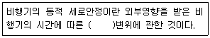
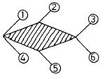
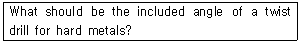
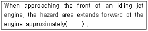
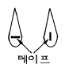
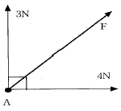

항공기체정비기능사 (2002-01-27 기출문제)
1과목: 비행원리
1. 비행기를 이.착륙 방법에 의하여 분류한 것은?
- 겹날개 비행기, 중간날개 비행기, 높은날개 비행기, 낮은날개 비행기
- 단발 비행기, 쌍발 비행기, 다발 비행기
- 육상 비행기, 수상 비행기, 수륙양용 비행기, 비행정
- 활공기, 회전날개 항공기, 전환식 항공기
(정답률: 72%)

2. 비행기가 공기중을 수평등속도 비행할 때 비행기에 작용하는 힘이 아닌 것은?
- 추력
- 항력
- 중력
- 가속력
(정답률: 87%)
3. 비행기가 V의 속도를 갖고 수평선에 대해 임의의 각도로 상승하고 있을 때 상승률(RATE OF CLIMB)을 구하는 식은?
- V x cosθ
- V x tanθ
- V2 x sinθ
- V x sinθ
(정답률: 46%)
4. 다음 ( ) 안에 알맞는 뜻은?

- 속도
- 하중
- 진폭
- 양력
(정답률: 61%)
5. 그림과 같이 초음속 흐름에 수평으로 놓인 다이아몬드형 날개골에서 발생하는 팽창파의 위치는?

- ①과 ④
- ②와 ⑤
- ③과 ⑥
- ①과 ⑥
(정답률: 87%)
6. 다음의 날개골 중에서 층류 날개골(laminar flow airfoil)이라고 할 수 있는 것은?
- NACA 2412
- NACA 23015
- NACA 651 - 215
- Clark - Y
(정답률: 51%)
7. 빗놀이 모멘트(Yawing Moment)를 계수형으로 올바르게 표시한 것은? (단, q : 동압, S : 날개면적, b : 날개길이, CN : 빗놀이 모멘트 계수로 오른쪽 회전이 (+))
- N = CN×q×s2×b2
- N = CN×q×s×b
- N =(s×b)/(CN×q)
- N =(CN×q)/(s2×b2)
(정답률: 63%)
8. 헬리콥터의 회전날개 허브에 대해 요구하는 특징이 아닌 것은?
- 가벼운 무게
- 많은 부품 수
- 정비 용이성
- 긴 수명
(정답률: 85%)
9. 헬리콥터의 깃이 받는 상대풍속이 최대가 되는 곳은?
- 회전속도와 전진속도가 반대 방향일 때
- 회전속도와 전진속도가 같은 방향일 때
- 회전속도와 전진속도가 직각 방향일 때
- 모든 방향에서 상대풍속은 같다.
(정답률: 50%)
10. 동적 세로 안정의 단주기 운동 발생시 조종사가 대처해야하는 방법으로 가장 올바른 것은?
- 즉시 조종간을 작동 시켜야 한다.
- 비행 불능상태 이므로 즉시 탈출하여야 한다.
- 조종간을 자유롭게 놓아야 한다.
- 받음각이 작아 지도록 조작해야 한다.
(정답률: 75%)
11. 항공기 날개 표면에 부착하는 와류발생장치(Vortex generator)는?
- 흐름의 떨어짐(박리; Separation)현상을 촉진한다.
- 흐름의 떨어짐 현상을 지연시킨다.
- 착륙거리 단축에 주 목적이 있다.
- 날개 좌우의 균형을 맞추어 준다.
(정답률: 66%)
12. 어떤 항공기가 200[m/s]로 비행하고 있다. 이 때의 항력이 3,500[kg]이라면 필요마력은 얼마인가? (단, 1HP는 75[kg·m/s]로 한다.)
- 약 1313 HP
- 약 2625 HP
- 약 5250 HP
- 약 9333 HP
(정답률: 66%)
13. V-n 선도에 관한 설명 내용으로 가장 올바른 것은?
- 항공기 속도에 대한 양력과 항력의 관계를 표시한다.
- 표준대기 상태에서 고도에 따른 압력, 밀도, 온도 등의 변화 현황을 보여 준다.
- 비행속도와 하중배수와의 관계로써 항공기의 안전비행 한계를 표시한다.
- 받음각의 변화에 따른 양력의 증가 또는 감소 현황을 나타낸다.
(정답률: 51%)
14. 순항방식중 고속 순항방식은?
- 연료를 소비하는데 따라 순항속도를 점차 줄여가는 순항방식
- 연료소비에 관계없이 순항 속도를 일정하게 유지하는 순항방식
- 비행기의 성능이 허용하는 최고속도로 비행하는 방식
- 기관의 출력을 일정하게 하여, 연료를 소비함에 따라 속도가 증가하는 순항방식
(정답률: 58%)
15. 비행기의 실용상승한계는 절대상승한계의 약 몇 %로 정하는가?
- 60 ∼ 70 %
- 70 ∼ 80 %
- 80 ∼ 90 %
- 90 ∼ 100 %
(정답률: 42%)
16. 항공법을 기준으로 하여 항공회사가 정비작업에 관해 안전성 확보 및 효과적인 정비작업의 수행을 목적으로 설정된 기술적인 규칙과 기준을 무엇이라 하는가?
- 정비조직
- 정비규정
- 정비관리
- 정비지시
(정답률: 82%)
17. 항공기 제작회사나 관련기관으로부터 발행되는 기술지시 중 구속력을 갖는 것으로 강제적으로 수행해야 하는 것은?
- 감항성 개선 명령(AIRWORTHINESS DIRECTIVE)
- 정비 기술 정보(SERVICE VULLETIN)
- 오버홀 교범(OVERHAUL MANUAL)
- 전송 정보(TELEX INFORMATION)
(정답률: 65%)
18. 수직공간이 제한된 곳에 사용되는 스크류 드라이버의 명칭은?
- 리이드 스크류 드라이버
- 프린스 스크류 드라이버
- 오프세트 스크류 드라이버
- 래치드 스크류 드라이버
(정답률: 64%)
19. 카운터 싱크(counter sink)는 무엇을 하는데 사용하는 공구인가?
- 리벳의 구멍 언저리를 원추모양으로 절삭하는데 사용
- 리벳의 구멍을 늘리는데 사용
- 리벳을 하고 밖으로 튀어나온 부분을 연마하는데 사용
- 리벳이나 스크류를 절단하는데 사용
(정답률: 48%)
20. AN315D-5R너트의 규격을 식별하는 방법에서 5의 의미는?
- 사용 볼트의 재질
- 사용 볼트의 지름
- 사용 볼트의 길이
- 사용 볼트의 나사산
(정답률: 59%)
2과목: 항공기정비
21. 두께 0.1㎝의 판을 굽힘 반지름 25cm 로서 90° 로 굽히려고 한다. 이때 세트 백(Set back)은 얼마인가?
- 25.1㎝
- 24.9㎝
- 20.1㎝
- 19.95㎝
(정답률: 73%)
22. 0.032인치(inch)두께의 알루미늄 두판을 접합 시키는데 필요한 유니버셜(Universal)rivet는?
- AN430 AD-4-3
- AN470 AD-4-4
- AN426 AD-3-5
- AN442 AD-4-4
(정답률: 42%)
23. 금속의 표면상의 손상에서 표면에 날카로운 물체로 인해서 좁고 얕게 새겨진 자국을 무엇이라 하는가?
- 찍힘(nick)
- 긁힘(scratches)
- 새김(scoring)
- 패임(pitting)
(정답률: 75%)
24. 수세성 형광침투 검사에서 유제(Emulsifier)의 기능은?
- 허위 결함지시를 제거하여 준다.
- 침투제를 물로 세척할 수 있게 해준다.
- 현상제의 흡입작용을 도와준다.
- 침투제의 침투능력을 증대시켜 준다.
(정답률: 44%)
25. 고음만 차음할 수 있는 귀마개는 몇 종 인가?
- 제 1종
- 제 2종
- 제 3종
- 제 4종
(정답률: 55%)
26. 산소취급시의 주의사항으로 가장 관계가 먼 것은?
- 산소자체는 가연성 물질이므로 폭발의 위험 보다는 화재에 유의 한다.
- 15m 이내에서 인화성 물질을 취급해서는 않된다.
- 취급자의 의류 또는 공구에 유류가 묻어있지 않도록 한다.
- 액체산소를 취급할 때는 동상에 걸릴 위험이 있다.
(정답률: 67%)
27. 다음의 영문 물음에 가장 올바른 것은?

- 118°
- 90°
- 65°
- 45°
(정답률: 51%)
28. 다음 ( )안에 알맞는 뜻은 ?

- 15feet
- 25feet
- 35feet
- 45feet
(정답률: 48%)
29. 비파괴 검사시 변환기, 증폭기, 발전기 등이 필요한 검사법은?
- 와전류 검사법
- 초음파 탐상법
- 침투탐상 검사
- 자분탐상 검사
(정답률: 46%)
30. 필러 게이지에 대한 설명 내용으로 가장 적합한 것은?
- 두께가 다른 강제의 얇은 편을 모아서 점검 또는 홈의 간격 등의 점검과 측정에 사용
- 점화 플러그의 간극을 측정하고 게이지에 부착된 간극 조절용 레버로 플러그 간극을 조절하는 측정 기구
- 나사 절삭 바이트의 기준 측정에 사용
- 안지름이나 홈을 측정하는 보조 측정기구
(정답률: 56%)
31. 불안전한 행위로 발생되는 사고와 관계 없는 것은?
- 물리적 위험 상태
- 주위 집중의 산만
- 작업자의 능력 부족
- 불안전한 습관
(정답률: 46%)
32. 최신형 항공기 조종계통의 비상 작동을 위한 동력 공급원으로 이용하기 위한 고압 가스는?
- 수소
- 산소
- 히드라진
- 할로겐
(정답률: 66%)
33. 안전에 직접 관련된 설비 및 구급용 치료 설비 등을 쉽게 알아보게 하기 위하여 칠하는 색깔은?
- 청색
- 황색
- 오랜지색
- 녹색
(정답률: 87%)
34. 정기적인 육안검사나 측정 및 기능시험 등의 수단에 의해 장비나 부품의 감항성이 유지되고 있는지를 확인하는 정비 방식에 해당되는 것은?
- 상태 정비
- 기록 정비
- 감항성 정비
- 오버홀 정비
(정답률: 54%)
35. 기체 표면을 수리할 때 수리가 된 부분은 원래의 윤곽과 표면의 매끄러움을 유지해야 한다. 고속 항공기에서 이러한 목적으로 패치를 부착하는 방법을 무엇이라 하는가?
- 플러시 패치(flush path) 방법
- 오버 패치(over patch) 방법
- 언더 패치(under patch) 방법
- 더블 패치(double patch) 방법
(정답률: 58%)
36. 승강타 트림탭의 조절은 어느 축에 대하여 항공기에 가장 큰 영향을 주는 것인가?
- 종축(longitudinal)
- 수직(vertical)
- 횡축(lateral)
- 수평(horizontal)
(정답률: 37%)
37. 조종용 케이블에서 와이어나 스트랜드가 굽어져 영구변형 되어 있는 상태를 무엇이라 하는가?
- Bird cage
- Kink cable
- Corrosion wire
- Broken wire
(정답률: 54%)
38. 날개쪽 방향으로 날개의 외판을 부착하는 것으로 날개의 굽힘강도를 크게하는데 작용하는 것은?
- 퍼머
- 날개보
- 리브
- 스트링거
(정답률: 35%)
39. 대형 항공기 날개표피에 사용되는 알루미늄 합금 2024-T6 에 관한 설명이다. 옳지 않은 것은?
- 알루미늄-구리 합금이다.
- 풀림처리로 열처리한 것이다.
- 담금질을 한 후 인공시효 경화한 것이다.
- 인장강도가 다른 알루미늄 합금에 비하여 상당히 크다.
(정답률: 36%)
40. 하중계수(LOAD FACTOR)에 대한 설명 내용으로 틀린 것은?
- 비행중 날개에 작용하는 수직분력과 항공기 총무게와의 비이다.
- 정상 수평 비행시의 하중계수는 0 이다.
- 수평비행시의 하중계수는 T류에 있어서는 그 값이 2정도이다.
- LOAD FACTOR = 1+(관성력/비행기 무게)로 표시한다.
(정답률: 49%)
3과목: 항공기체
41. 헬리콥터의 회전날개중 플래핑힌지,페더링힌지,항력힌지의 세 개의 힌지를 모두 갖춘 회전날개의 형식은?
- 관절형 회전날개
- 반고정형 회전날개
- 고정식 회전날개
- 베어링리스 회전날개
(정답률: 68%)
42. 헬리콥터 꼬리회전날개의 전자장비를 이용한 궤도점검방법에서 회전날개 깃의 단면에 그림과 같이 반사테이프를 붙이고 장비를 작동시켰을 때,정상궤도에서는 어떻게 상이 보이는가?

- -
- 1
- +
- -1
(정답률: 72%)
43. 응력과 변형률 관계의 재료시험에서 응력이 증가하지 않아도 변형이 저절로 증가하게 되는 점은?
- 비례한도점
- 항복점
- 탄성점
- 최대응력점
(정답률: 50%)
44. 헬리콥터가 자동회전비행을 할 때에 회전날개 구동축을 기관구동축과 분리시키는 장치는?
- 자동비행 분리축
- 기관분리 구동축
- 자동비행장치
- 자유회전장치
(정답률: 31%)
45. 항공기 객실여압은 객실고도 2,400m(8000ft)로 유지한다. 지상의 기압으로 하지 못하는 가장 큰 이유는?
- 인간에게 가장 적합하기 때문에
- 동체의 강도한계 때문에
- 여압펌프의 한계 때문에
- 엔진의 한계 때문에
(정답률: 62%)
46. 항공기 출입문중 동체스킨(Skin)의 안으로 여는 형식은?
- 플러그형(Plug Type)
- 티형(T Type)
- 팽창형(Expand Type)
- 밀폐형(Seal Type)
(정답률: 66%)
47. 접개들이식 착륙장치의 작동 순서가 가장 올바르게 나열 된 것은?
- 착륙장치레버작동-다운래치풀림-도어열림-착륙장치내려감-도어가 닫힘
- 착륙장치레버작동-도어열림-다운래치풀림-착륙장치내려감-도어가 닫힘
- 착륙장치레버작동-업래치풀림-도어열림-착륙장치내려감-도어가 닫힘
- 착륙장치레버작동-도어열림-업래치풀림-착륙장치내려감-도어가 닫힘
(정답률: 43%)
48. 허니컴 구조(Honeycomb Structure)에 있어서 외피(Skin)가 들떠 있거나, 떨어지는 현상을 점검하는 간단한 방법은?
- 코인(Coin) 검사
- X-선 촬영
- 와류탐상 검사
- 촉각에 의한 검사
(정답률: 71%)
49. 열가소성 수지중 유압 백업링(Backup Ring), 호스(Hose), 패킹(Packing), 전선피복(Coating)등에 사용되는 수지는?
- 폴리에틸렌수지
- 테프론(Taflon)
- 아크릴수지
- 염화비닐수지
(정답률: 51%)
50. AISI(SAE) 4130 에서＂30＂에 대한 가장 올바른 설명은?
- 탄소를 0.3% 포함한다.
- Ni 을 30% 포함한다.
- 탄소를 30% 포함한다.
- Ni 을 0.3% 포함한다.
(정답률: 57%)
51. 마그네슘 합금의 특성중 틀린 것은?
- 절삭성이 우수하다.
- 실용금속중 가장 가볍다.
- 내열성, 내마모성이 떨어진다.
- 항공기의 구조대로 많이 사용된다.
(정답률: 34%)
52. 재료의 피로(Fatigue)파괴라 함은?
- 재료의 인성과 취성을 측정하기 위한 시험법이다.
- 합금성질을 변화시키려하는 성질
- 시험편(Test Piece)을 일정한 온도로 유지하고 이것에 일정한 하중을 가할때 시간에 따라 변화하는 현상
- 재료에 반복하여 하중이 작용하면 그 재료의 파괴응력보다 훨씬 낮은 응력으로 파괴되는 현상
(정답률: 78%)
53. 항공기의 구조시험의 종류가 아닌 것은?
- 낙하시험
- 비행시험
- 피로시험
- 진동시험
(정답률: 55%)
54. 스키드 기어(skid gear)형 착륙장치의 구성품이 올바르게 짝지어진 것은?
- 전방가로버팀대,후방가로버팀대,스키드,스키드 슈,휠
- 전방가로버팀대,휠,스키드,피팅,스키드 슈
- 전방가로버팀대,후방가로버팀대,스키드,휠, 완충버팀대
- 전방가로버팀대,스키드,스키드 슈,고무부싱,휠
(정답률: 46%)
55. 항공기 구조부에 작용하는 내부하중으로 가장 올바른 것은?
- 압축,전단,비틀림,인장
- 압축,전단,비틀림,인장,굽힘
- 압축,항력,비틀림,굽힘
- 양력,추력,항력,중력
(정답률: 60%)
56. 알루미늄 합금에 있어 강도에 영향을 주지 않는 것은?
- 열처리
- 냉간가공
- 재료성분
- 도장
(정답률: 68%)
57. 브레이크 장치가 가열되어 브레이크 라이닝이 소손됨으로 미끄러지는 현상을 무엇이라 하는가?
- 스키드현상(SKID)
- 드래깅현상(DRAGGING)
- 그래빙현상(GRABBING)
- 페이딩현상(FADING)
(정답률: 32%)
58. 항공기의 중심위치를 계산할 때 쓰는 모멘트라는 것은 어느 것을 뜻하는가?
- 길이 x 무게
- 길이 + 무게
- 무게 - 길이
- (무게 x 길이) % 2
(정답률: 66%)
59. 항공기의 최대중량이란?
- 자기중량+승무원+최대연료+화물+수화물
- 자기중량+승무원+승객+고정된 장비
- 자기중량+승무원+고정된장비
- 자기중량+유효탑재물
(정답률: 76%)
60. 다음 그림과 같이 A 지점에 힘이 직각으로 3N과 4N이 작용한다면 합력 F는 얼마인가?

- 2.75N
- 4.86N
- 5.00N
- 5.25N
(정답률: 68%)